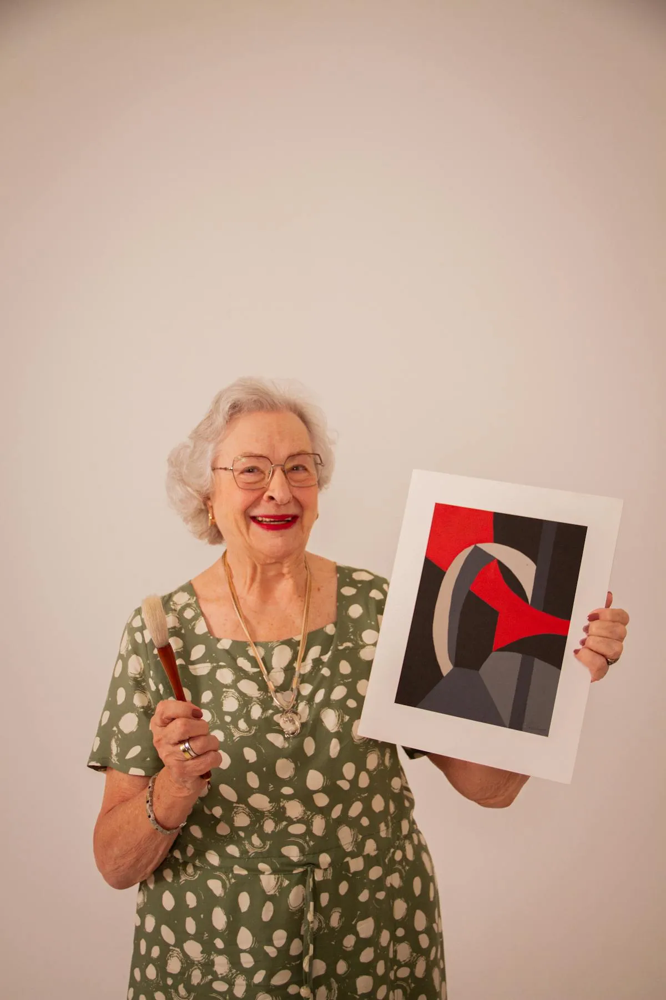

「毎月のレクリエーション、ネタが尽きた…」「新しい創作活動を探している」
そんな介護施設・デイサービスの職員様へ。
現役サンドアート講師として年間50件以上の高齢者向けワークショップを開催している経験から、高齢者が夢中になるサンドアート活用法をご紹介します。
この記事でわかること
なぜ今、介護レクリエーションにアートが選ばれるのか
デイサービスや老人ホームの現場では、毎月・毎週のレクリエーション企画に頭を悩ませている職員様がとても多いです。「何か新しいネタはないか」「利用者様みんなが楽しめるものを」——そんな声を、私自身も現場で何度も耳にしてきました。
単調になりがちなレクの課題
- 同じ内容の繰り返しで飽きが来る
- 身体機能に差があり参加が難しい利用者も
- 準備や片付けに時間がかかる
折り紙・塗り絵・体操など定番のレクは素晴らしいですが、毎回同じだと利用者様の反応も薄くなりがち。かといって凝った企画は、準備に時間がかかって現場の負担が大きくなってしまいます。
「できる」を引き出すアクティビティの重要性
- 成功体験が自信と笑顔につながる
- 指先を使うことで認知機能の維持に
- 色と向き合うことで気持ちが明るくなる
高齢者向けのレクで大切なのは、「難しすぎない、でも達成感がある」活動であること。失敗が目立つ活動は自信を失わせてしまいますが、「自分の手で作れた！」という体験は、何よりの気持ちの栄養になります。
サンドアートが介護レクにピッタリな5つの理由
それでは、なぜ今サンドアートが介護施設で注目されているのか。現場で実際に見てきた「利用者様が夢中になる理由」を5つにまとめました。
理由1：「失敗がない」のが最大の魅力
- 砂を入れるだけで誰でも美しく完成
- 「できない」を感じさせない
サンドアートはカラフルな砂をグラスに重ねていくだけのシンプルな工程。どんな順番で入れても、どんな色を選んでも、不思議と美しい作品に仕上がります。「上手／下手」の差がつかないからこそ、どなたも安心して取り組めるのです。
理由2：指先のリハビリ効果
- 砂をすくう、グラスに入れる動作が巧緻性を鍛える
- 日常生活動作の維持にもつながる
スプーンで砂をすくい、グラスに注ぐ。この一連の動作は、箸を使う・服のボタンを留めるといった日常動作と似ています。楽しみながら自然と手指のリハビリになるのが、サンドアートの嬉しいポイントです。
理由3：認知機能への働きかけ
- 色を選ぶ判断力
- 層を重ねる順序の記憶
- 完成イメージを想像する思考力
「次はどの色にしようかな」「赤の上には何色を重ねよう」——そうやって考える時間そのものが、脳への刺激になります。認知症予防・脳トレを兼ねたレクとして、認知症対応型デイサービスでも採用されています。
理由4：車椅子の方も座ったまま参加可能
- 立ち上がりが難しい方も楽しめる
- 手元だけで完結するから安心
体を大きく動かす必要がないため、車椅子の方や寝たきりに近い方も同じテーブルで楽しめます。「みんなで一緒に」の一体感が生まれるのも、サンドアートならでは。
理由5：作品が残る達成感
- お部屋に飾れる「思い出の品」になる
- ご家族との会話のきっかけにも
できあがった作品は、直射日光を避ければ半永久的に飾れます。ご自分の部屋に飾ったり、面会に来たご家族に見せたり。「私が作ったのよ」と誇らしげに語る時間が、何よりの心のケアになります。
こんな場面で活用されています
実際にnicolonのサンドアートが、どんな介護現場で活用されているのかをご紹介します。
毎月のレクリエーション
15〜30分で完成するので、午前・午後のレクタイムにちょうど良い長さ。集中力が続きにくい方でも、最後まで飽きずに楽しめます。毎月テーマを変えることで、季節感のある創作活動としてリピートしていただいている施設もあります。
敬老会・季節イベント
春・夏・秋・冬のテーマ別プランをご用意。桜色の春バージョン、海をイメージした夏バージョン、紅葉の秋バージョン、雪景色の冬バージョンなど、季節に合わせた色展開で敬老会を華やかに彩ります。
認知症カフェ・脳トレ教室
色を選ぶ・順序を考えるという工程が、集中力を高める効果が期待できます。認知症カフェではご本人とご家族が一緒に取り組むことで、穏やかな交流の時間が生まれています。
ご家族参加イベント
お孫さん・お子さん世代も一緒に楽しめるのがサンドアートの良いところ。三世代での交流イベントとして、施設の年に一度のファミリーデーなどでも好評です。
介護レクの企画、LINEで気軽に相談♪
お見積り・空き状況のご確認は無料です。
出張費・団体割引もございますのでお気軽に。
実施の流れ（職員様の負担を最小限に）
「現場が忙しいから、準備に時間がかかる企画は難しい…」そんな声にお応えして、職員様の負担を最小限に抑える仕組みでご提供しています。
LINEでご相談（規模・予算）
まずはLINEで、施設名・予定人数・ご希望日程・ご予算感などをお知らせください。折り返しこちらから、おすすめのプランをご提案します。
日程・内容の打ち合わせ
電話・メール・ZoomなどでOK。利用者様の身体状況やご希望のテーマをうかがい、当日の流れを一緒に決めていきます。
当日、講師が材料持参で出張
カラフル砂・グラス・スプーン・テーブルクロスまで、必要な道具はすべて講師が持参します。施設側でご準備いただくものは基本的にありません。
準備〜片付けまでお任せ
テーブルセッティングから片付け・清掃まで講師が担当。職員様はいつも通り利用者様のサポートに専念していただけます。
利用者様の声
現場でいただいた嬉しい感想
- 80代女性：「絵を描くのはもう無理と思っていたけど、これなら私でも作れたわ。嬉しい」
- 90代男性：「普段あまり話さない方が、完成したグラスを職員に見せて『きれいでしょう』と笑顔に」
- 認知症の80代女性：「最初は戸惑っていたけど、色を選び始めたら集中して30分、手元から目を離さなかった」
- 職員様：「片付けまでお任せできて本当に助かりました。職員は見守るだけで良いのも嬉しい」
普段はあまり積極的に活動に参加されない方が、サンドアートだけは毎回楽しみにしてくれる——そんな声を、本当に多くの施設様からいただいています。
料金の目安
| 出張ワークショップ | 1人 2,000円〜 （材料費・講師料込み） |
|---|---|
| 交通費 | 別途（福岡市内は無料） |
| 所要時間 | 30分〜1時間 |
| 推奨人数 | 5〜20名 |
| 対応エリア | 全国47都道府県 |
| 団体割引 | あり（人数・回数に応じて） |
※ 継続契約（毎月開催など）の場合は、さらにお得な定額プランもご提案可能です。まずはLINEでご相談ください。
よくある質問
認知症の方も参加できますか？
はい、多くのデイサービスで認知症の方にもご好評いただいております。難しい説明は不要で、見本を示しながらサポートいたします。色を選ぶ・砂を入れるというシンプルな動作なので、無理なく楽しんでいただけます。
車椅子の方や手の動かしにくい方でも大丈夫ですか？
はい、座ったまま手元だけで完結するので、車椅子の方も参加可能です。必要に応じて職員様・ご家族にサポートをお願いする場合もありますが、ほとんどの方がご自身で作品を完成させることができます。
何人から依頼できますか？
最小3名様から承ります。大人数（50名以上）も分散開催などで対応可能です。ご利用人数に合わせた柔軟なプランをご提案しますので、お気軽にご相談ください。
福岡以外でも出張できますか？
全国47都道府県対応しています。福岡市内は出張費無料、それ以外の地域については交通費を別途ご相談させてください。近隣施設との合同開催でコストを抑えることも可能です。
介護レクのご相談、お待ちしています
1人 2,000円〜｜材料・片付けすべてお任せ｜全国対応
LINEで「介護レクの相談」と送るだけ！見積り無料です。

原野 玲未REMI HARANO
サンドアート講師 / Webエンジニア / 5児の母
福岡県在住。日本サンドアート協会認定講師として年間100件以上のワークショップを開催。うち50件以上はデイサービス・老人ホーム・敬老会など高齢者向けの現場。「できる」を引き出すレクリエーションを心がけています。